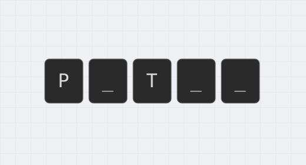

Concept illustration
Concept illustrationInnovation · conceptual proposal
Wireless Charging Deskpad
Exploration of a work surface with wireless power transfer.
Academic projects, practical experience and innovation proposals.
Concept illustrationExploration of a work surface with wireless power transfer.
 Concept illustration
Concept illustrationStudy of graphs, algorithms and optimization models.
 Concept illustration
Concept illustrationSystems programming and concurrency fundamentals.
 Concept illustration
Concept illustrationApplication of Dijkstra’s algorithm to graphs in C.

Concept illustrationHangman game with language resources.
 Concept illustration
Concept illustrationInformational website and inventory and sales spreadsheets.
Browse repositories on GitHub.